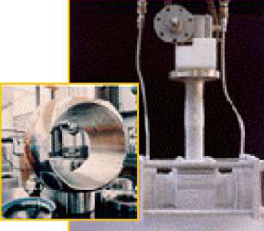
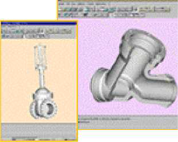

Truflo Rona is an international leader in the manufacturing of high integrity valves for the oil & gaz, LNG, petrochemical and shipbuilding industries
-
Truflo Rona manufactures high-integrity specialist valves : - Gate valves
- Globe valves
- Check valves
- Top entry ball valves
-
Services :
Product development, engineering and testing for its products in the field of process plants : - gas carriers
- petrochemical industries
- high temperature and erosion applications
- oxygen service and oil & gas


Contact Person
Mr Olivier Beyerman
Sales
email: o.beyerman@truflorona.com
tel: +32 4 2406883
fax: +32 4 2480246
http://www.truflointernational.com
Parc Industriel des Hauts Sarts
4040 Herstal
Belgium
Contact Person
Mr Olivier Beyerman
Sales
email: o.beyerman@truflorona.com
tel: +32 4 2406883
fax: +32 4 2480246
http://www.truflointernational.com
Parc Industriel des Hauts Sarts
4040 Herstal
Belgium